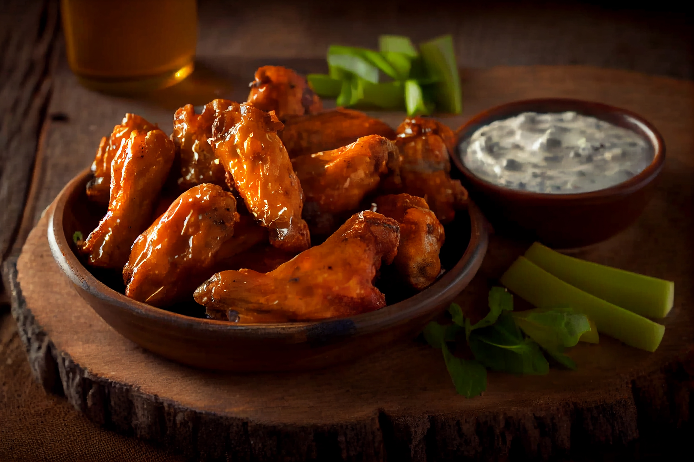

Smoked Wings

Description
The best smoked wings!
Ingredients
- 2 cups Hot Sauce
- 1 bottle Zesty Italian Dressing
- 1/2 cup soy sauce
- 1/2 cup worcestershire sauce
- AP Rub
- BBQ Rub
- Wings Sauces
Steps
- The wings go into a large zip top bag. In a large mixing bowl add 2 cups of your favorite Hot Sauce, 1 bottle of Zesty Italian Dressing, ½ cup Soy Sauce, and ½ cup Worcestershire Sauce.
- Mix these ingredients and pour into the bag with the wings. Squeeze as much air out as possible and toss the wings around so the marinade covers everything.
- Place the bag of wings in a cooler on ice. Let the wings marinate for at least 3-4 hours but overnight won’t hurt.
- Take the chicken wings out of the marinade, let the excess marinade drip off, and arrange them on the rack.
- Season each side with a light dose of Killer Hog’s AP Rub (Salt, Pepper, Garlic) then a light dust of Killer Hogs The BBQ Rub.
- Get your smoker up and running at 275⁰. Throw a chunk of Cherry and Hickory wood on the hot coals and place the wings in the cooker. You can use any smoker or grill, just maintain your temp in the 275 range for the entire cook.
- After the smoked wings have smoked for 1 hour, go ahead and flip the wings over at this stage and hit them with a little extra rub so they cook even.
- After cooking for an additional 30 min – 1 hour, the wings are done and ready to serve. You can toss them in any sauce you like. Dig in and enjoy these smoked part wings!